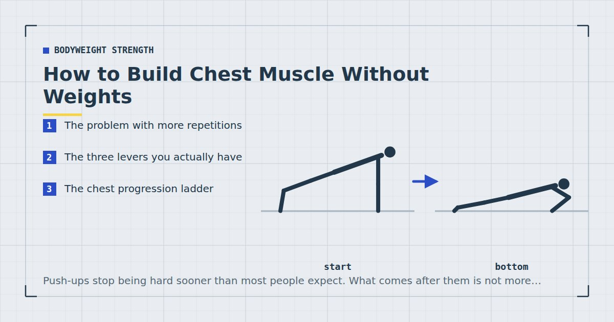

Bodyweight Strength
How to Build Chest Muscle Without Weights
Push-ups stop being hard sooner than most people expect. What comes after them is not more repetitions — it is leverage.

The first few months of push-ups produce real change. Then, somewhere around thirty repetitions, progress becomes very slow, and the standard advice is to do more of them.
That advice is close to useless. Fifty push-ups is a cardiovascular event, not a chest stimulus. What you need instead is a way to make each repetition harder, and there are three ways to do that without owning anything.
The problem with more repetitions
Muscle growth responds to mechanical tension and to sets being taken close to failure. A review comparing low and high loads found comparable hypertrophy when sets went close to failure,1 which is genuinely good news for bodyweight training — but it does not mean any number of easy repetitions eventually adds up.
Once a set requires forty repetitions to approach failure, the limiting factor has drifted toward local muscular endurance and cardiovascular capacity. You are still training, but you are increasingly training something other than the thing you set out to train, and it takes far longer per set.
Keeping working sets in roughly the six-to-twenty range is not a strict rule but it is a sensible target. Below that, bodyweight rarely provides enough load; above it, the session becomes impractical.
The three levers you actually have
Leverage. Change the angle of your body so a greater proportion of your bodyweight goes through your arms. Elevating the feet is the simplest version.
Range and time under tension. Slow the movement down, pause at the bottom, or increase the range with an elevated hand position.
Fewer limbs. Shift toward one arm doing more of the work. The endpoint of the ladder, and by far the largest jump in difficulty available.
Almost every advanced bodyweight chest exercise is one of these three, or a combination.
The chest progression ladder
| Stage | Variation | Move on at |
|---|---|---|
| 1 | Incline push-up | 3 × 12 |
| 2 | Floor push-up | 3 × 15 |
| 3 | Feet elevated on a step | 3 × 12 |
| 4 | Feet on a chair or sofa | 3 × 12 |
| 5 | Deficit push-up (hands elevated) | 3 × 12 |
| 6 | Archer push-up | 3 × 8 each side |
| 7 | Uneven push-up | 3 × 8 each side |
| 8 | One-arm push-up progression | — |
If you are still working toward stage two, start with the incline ladder in push-up progressions for beginners. Technique matters more as the variations get harder, so get the basics right first via how to do a perfect push-up.
Stages 3 and 4: elevating the feet
The most straightforward progression. A step or a stack of books first, then a chair, then a sofa. Each increase shifts more bodyweight forward onto the arms and also shifts emphasis slightly toward the upper chest and shoulders.
Beyond about sofa height the exercise becomes more of a shoulder movement than a chest one, so this lever has a natural ceiling.
Stage 5: deficit push-ups
Hands on two stacks of books or two low chairs so your chest can descend below hand level. This increases the range of motion at the bottom, which is where the chest is most stretched and, plausibly, where much of the growth stimulus comes from.
Go carefully at first. The extra range is demanding on the shoulders, and this is a variation worth introducing gradually.
Stages 6 and 7: shifting the load sideways
An archer push-up has the hands wide, with one arm bending while the other stays nearly straight, so the bending arm takes most of the load. An uneven push-up places one hand on a raised surface, achieving something similar.
Both are large jumps. Expect your repetitions to fall dramatically.
Tempo, and why it is underrated
The cheapest progression available, and the one people reach for last.
A push-up with a four-second descent, a two-second pause at the bottom and a normal-speed press is dramatically harder than the same movement done at normal speed, with no change in equipment, position or repetitions. Ten of those is a real set for most people who can do thirty normal push-ups.
The pause at the bottom matters most. It removes the stretch reflex — the elastic rebound that makes the first inch of the press easier — so the muscle has to generate the force from a dead stop.
Use tempo as the bridge between stages. When you can do three sets of twelve of a variation but the next stage feels impossible, spend a few weeks adding tempo to the current one.
Nobody is impressed by fifty push-ups, and your chest is not either. Ten slow ones with a pause is the harder set.
Going unilateral
The one-arm push-up is the endpoint, and it is worth being clear that it is a skill as much as a strength feat. It requires substantial anti-rotation strength through the trunk as well as pressing strength, and most people who reach it do so over a year or more.
The route runs through archer push-ups, then uneven push-ups with a progressively lower raised hand, then one-arm push-ups against a wall, then on an incline, then eventually on the floor with a wide stance.
Whether it is worth pursuing is a fair question. For chest development specifically, three sets of slow deficit push-ups will do as much and take considerably less time to reach.
A chest programme
Two sessions a week, three to four sets per session, with at least two days between. Weekly volume drives adaptation up to a point,2 and roughly ten to twenty hard sets per week for the chest is a reasonable target.
Stop most sets one to three repetitions short of failure, and take the last set of each exercise closer. Training to absolute failure on every set costs more recovery than it returns.3
Pair chest work with pulling volume at least equal to it. A programme heavy in pressing and light in rowing is the most common imbalance in home training — the options are in rows at home.
Where bodyweight chest training runs out
Honestly: further out than most people think, but not indefinitely.
You can build a genuinely well-developed chest with bodyweight training alone. What you cannot easily do is train the very low repetition ranges that build maximal strength, and you will eventually reach a point where the available progressions are limited by skill and joint tolerance rather than by chest strength.
At that stage, a small amount of equipment changes things substantially — a weighted vest or a loaded rucksack lets you keep using the variations you have already mastered. The options are in weighted vest training at home and DIY home gym equipment. For most people, that point is a year or two away.
Where to go next
For the equivalent ladders across every movement pattern, see bodyweight exercise progressions. For pressing that emphasises the shoulders instead, see the bodyweight shoulder workout.
Frequently asked questions
Can you build a big chest with just push-ups?
Yes, provided you keep progressing to harder variations rather than adding repetitions. Elevating the feet, adding a deficit, slowing the tempo and moving toward archer and one-arm variations all keep the load in a productive range.
How many push-ups should I do to build muscle?
Keep working sets roughly in the six-to-twenty range and make the variation harder when you exceed it. If a set requires forty repetitions to approach failure, you are training endurance more than strength.
Are decline push-ups better than regular push-ups?
Harder, and they shift emphasis slightly toward the upper chest and shoulders. Beyond about sofa height the exercise becomes more of a shoulder movement, so the lever has a natural ceiling.
What is a deficit push-up?
A push-up with the hands elevated on books or low chairs so the chest can descend below hand level. It increases range of motion at the bottom, where the chest is most stretched. Introduce it gradually, as the extra range is demanding on the shoulders.
How do I progress push-ups without equipment?
Three levers: change leverage by elevating the feet, increase time under tension by slowing the descent and pausing at the bottom, or shift load onto one arm through archer and uneven variations. Tempo is the cheapest and most underused.
How often should I train chest at home?
Two sessions a week with at least two days between, three to four hard sets per session. Match or exceed that volume with rowing work to avoid the pressing-heavy imbalance common in home training.
Sources and further reading
- Schoenfeld BJ, Grgic J, Ogborn D, Krieger JW. “Strength and Hypertrophy Adaptations Between Low- vs. High-Load Resistance Training: A Systematic Review and Meta-analysis.” Journal of Strength and Conditioning Research, 2017;31(12):3508–3523. PubMed.
- Schoenfeld BJ, Ogborn D, Krieger JW. “Dose-response relationship between weekly resistance training volume and increases in muscle mass: A systematic review and meta-analysis.” Journal of Sports Sciences, 2017;35(11):1073–1082. PubMed.
- Vieira AF, Umpierre D, Teodoro JL, et al. “Effects of Resistance Training Performed to Failure or Not to Failure on Muscle Strength, Hypertrophy, and Power Output: A Systematic Review With Meta-Analysis.” Journal of Strength and Conditioning Research, 2021. PubMed.
- Currier BS, Mcleod JC, Banfield L, et al. “Resistance training prescription for muscle strength and hypertrophy in healthy adults: a systematic review and Bayesian network meta-analysis.” British Journal of Sports Medicine, 2023. PubMed.
Comments
Comments are not enabled yet. Add a hosted comment embed (Disqus, Commento, Giscus) inside this container when you are ready.